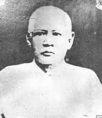
FatherA prosperous farmer and leaseholder of the Dominican hacienda in Calamba. Francisco was a hardworking, dignified man who gave young José comfort, stability, and education. His unjust imprisonment by colonial authorities would deepen Rizal's rage against oppression and sharpen the pen that shook an empire.
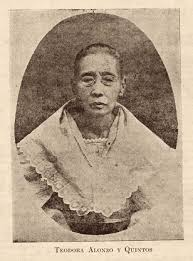
MotherAn educated and cultured woman who taught Rizal the alphabet and instilled in him a profound love for poetry and language. Rizal called her the greatest influence on his life. Her own wrongful imprisonment — forced to walk miles in chains — became one of his most powerful motivations for reform.
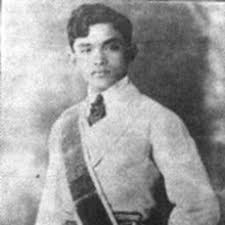
BrotherRizal's only brother and his greatest earthly hero. Paciano was a political mentor who introduced José to the progressive ideas of Father Burgos. He sacrificed his own future, secretly financing Rizal's studies in Manila and Europe. He later became a general in the Philippine Revolution.
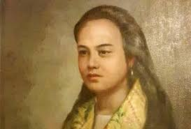
First LoveRizal's first known love, encountered when he was sixteen in Biñan, Laguna. A charming girl from Lipa, Batangas, she captivated him deeply. Their brief romance ended when Rizal learned she was already engaged. He described her in his memoirs with tender, lingering fondness as his earliest heartbreak.
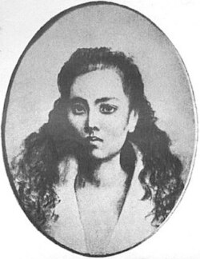
Great LoveThe great love of Rizal's life and the inspiration behind María Clara in Noli Me Tángere. They exchanged over three hundred letters during his years in Europe. Her mother intercepted his correspondence, leading Leonor to believe him unfaithful. She married a British engineer and died of tuberculosis three years later.
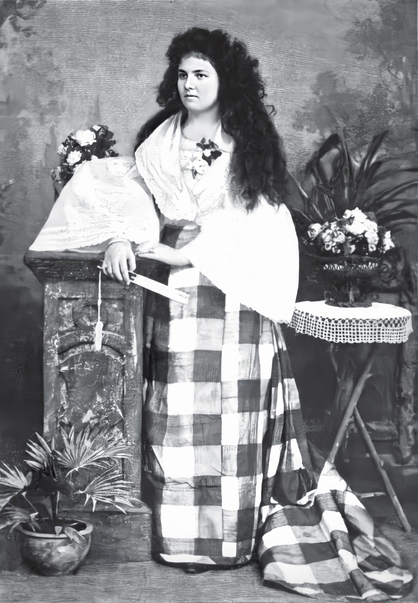
Final CompanionAn Irish-Filipino woman who met Rizal during his exile in Dapitan. She stayed to become the companion of his final years. Rizal's request to marry her was refused by the Church. He is said to have placed Mi Último Adiós in her hands hours before his execution.
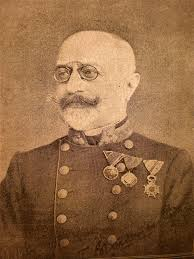
Closest FriendAn Austrian ethnologist and professor who became Rizal's most beloved friend through letters alone. Their correspondence forms one of the great literary friendships of the 19th century. He was Rizal's most passionate defender in Europe — weeping publicly upon hearing of the execution.
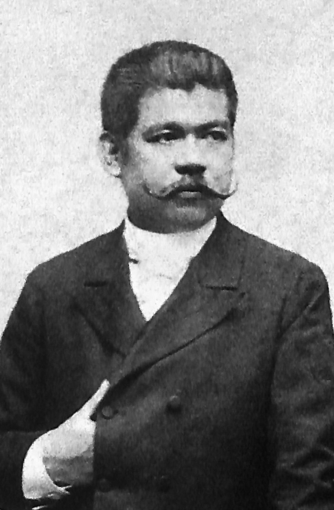
CompatriotFellow Propagandist and editor of La Solidaridad, del Pilar was Rizal's great rival and colleague in the reform movement. A gifted satirist and lawyer, he devoted everything to the cause of Philippine freedom — dying in poverty in Barcelona.
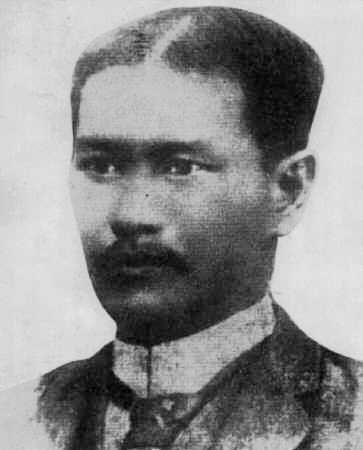
Fellow PropagandistFounder of La Solidaridad and the most electrifying orator of the Propaganda Movement. His impassioned speeches in Spain championed Filipino rights with fire and humor. He and Rizal shared the same blazing idealism — and the same tragic end.
 Mentor
Mentor
A brilliant Jesuit professor at the Ateneo Municipal de Manila who recognized Rizal's extraordinary literary gifts and became his most important academic mentor. He guided Rizal's early writings and encouraged the young student to develop his poetry with discipline and intellectual rigor.
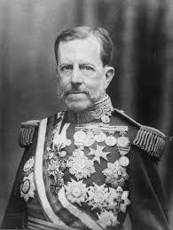
AdversaryThe Spanish Governor-General who ordered Rizal's exile to Dapitan in 1892. His iron hand typified the colonial authority that Rizal spent his entire life opposing — through the pen rather than the sword.
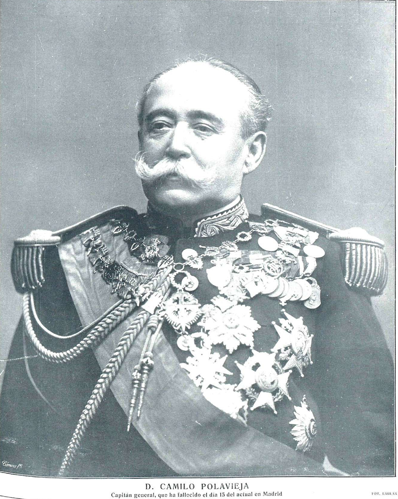
AdversaryThe Governor-General who signed Rizal's death warrant. Despite international petitions for clemency, Polavieja upheld the sentence of execution by firing squad at Bagumbayan. His decision paradoxically immortalized Rizal as the nation's supreme martyr.